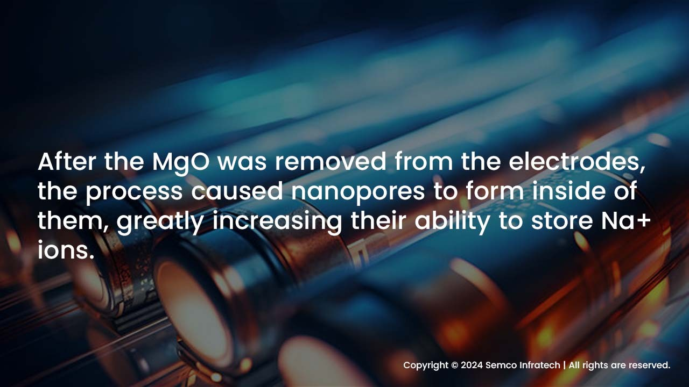

Promising next-generation substitutes for the widely used lithium-ion batteries (LIBs) are sodium- and potassium-ion batteries. They still have a lower energy density than LIBs, though. Japanese researchers investigated a novel approach to transform hard carbon into a superior negative electrode material to address this problem.
They created nanostructured hard carbon during synthesis by using inorganic zinc-based compounds as a template. This material performs exceptionally well in both alternative batteries.
With a wide range of uses, lithium-ion batteries (LIBs) are by far the most popular kind of rechargeable batteries.
These include spacecraft, renewable energy systems, electric cars (like Tesla cars), and consumer electronics.
When compared to other rechargeable batteries, LIBs perform better in many areas, but they are not without drawbacks of their own.
Since lithium is a relatively rare resource, its price will increase as its supply decreases in the future.
Furthermore, because the liquid electrolytes used in LIBs are frequently toxic and flammable, both the extraction of lithium and the incorrect disposal of LIBs present significant environmental challenges.
Researchers from all over the world are searching for alternative energy storage technologies as a result of LIBs' shortcomings.
Potassium- and sodium-ion batteries (NIBs and KIBs) are two quickly developing, affordable, and environmentally friendly solutions.
By the end of the decade, both KIBs and NIBs are expected to be billion-dollar industries.
Furthermore, a lot of money is being invested in this technology by businesses like Faradion Limited , Tiamat Energy , and HiNa Battery Technology Co., Ltd.
It is anticipated that BYD and CATL will release NIB-equipped electric vehicle battery packs shortly.
Regretfully, though, the NIB and KIB electrode materials' capacity still falls short of that of LIBs.For NIBs and KIBs, a group of researchers has been developing novel high-capacity electrode materials.
The most recent study reports on a novel synthesis approach for nanostructured "hard carbon" (HC) electrodes with previously unheard-of performance. It was published in Advanced Energy Materials on November 9, 2023.
However, what is HC and how does it help KIBs and NIBs? In contrast to other carbon-based materials like graphene or diamond, HC is amorphous, meaning it lacks a distinct crystalline structure.
It is resistant and strong as well. Magnesium oxide (MgO) was utilized as a template to change the final nanostructure of the HC electrodes for NIBs in a study published in 2021.

After the MgO was removed from the electrodes, the process caused nanopores to form inside of them, greatly increasing their ability to store Na+ ions.
Inspired by these earlier discoveries, the scientists investigated the possibility of using compounds derived from zinc (Zn) and calcium (Ca) as nano-templates for hydrocarbon electrodes.
To achieve this, various HC samples produced by combining calcium carbonate (CaCO3) and zinc oxide (ZnO) have been thoroughly examined, and their efficacy has been contrasted with that of samples produced using magnesium oxide (MgO).
ZnO was particularly promising for the negative electrode of NIBs, according to preliminary experiments.
To achieve a reversible capacity of 464 mAh g-1 (corresponding to NaC4.8) with a high initial Coulombic efficiency of 91.7% and a low average potential of 0.18 V vs. Na+/Na, the researchers adjusted the concentration of ZnO embedded in the HC matrix during synthesis. Researchers used this potent electrode material inside a real battery and got amazing results. The ZnO-templated HC that was optimized for use as the negative electrode in the NIB fabrication process demonstrated an energy density of 312 Wh kg-1. This value is more than 1.6 times the energy density of the first NIBs (192 Wh kg-1), which was reported back in 2011, and is comparable to the energy density of some types of currently commercialized LIBs with LiFePO4 and graphite." Notably, the ZnO-templated HC further demonstrated its potential by demonstrating a noteworthy capacity of 381 mAh g-1 when integrated into a KIB.
When considered as a whole, the study's findings indicate that pore structure can be effectively controlled by utilizing inorganic nanoparticles as a template. This could lead to the development of HC electrodes.
Studies prove that HCs are promising candidates for negative electrodes as an alternative to graphite.
As a result, this may make NIBs feasible for real-world uses, like the creation of environmentally friendly consumer electronics, electric cars, and low-carbon energy storage systems for solar and wind power generation.